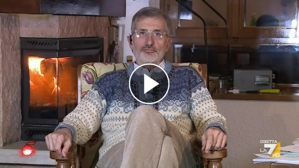

54:44 · 1 OPERA
Continua il linciaggio mediatico del prof. Paolo Bellavite.
Il filo del discorso
La contestazione pubblica delle dichiarazioni di Paolo Bellavite sui vaccini è il punto di partenza di una riflessione polemica sul dissenso, sull’autorità universitaria e sulla responsabilità delle parole. Caldarella legge e commenta la nota con cui il rettore dell’Università di Verona, Pier Francesco Nocini, aveva preso le distanze dall’intervento a DiMartedì. Il relatore difende la possibilità di porre domande su benefici e rischi e critica il modo in cui una istituzione delimita la rappresentatività di un proprio ex docente. Le accuse personali e i paragoni con il fascismo appartengono alla sua argomentazione e non sono accertamenti di intenzioni, competenza clinica o condotte illecite. La lettura procede sulle formule del comunicato: la dichiarazione di sostegno alla campagna vaccinale, il riconoscimento di possibili effetti avversi, la sorveglianza delle autorità sanitarie e la distinzione fra opinioni personali e posizione dell’ateneo. Caldarella chiede dati, contesta alcune scelte linguistiche e oppone la libertà di giudizio alla richiesta di conformità. Il testo dell’università riconosce tuttavia i possibili rischi: la sua posizione non viene riscritta come una promessa di sicurezza assoluta. Un passaggio decisivo riguarda una tabella di segnalazioni successive alla vaccinazione. Il relatore ne ricava un confronto allarmante con la mortalità della malattia, ma il 2,1 per cento discusso riguarda la quota di decessi segnalati sul totale dei rapporti citati, non sul numero dei vaccinati. La scheda conserva la richiesta di trasparenza e chiarisce il limite del confronto: una segnalazione VAERS non dimostra da sola un nesso causale e non misura direttamente il rischio di morire a causa di un vaccino. Anche il richiamo a un articolo di Peter Doshi richiede una distinzione fra autorizzazione di emergenza negli Stati Uniti e autorizzazione condizionata nell’Unione europea. Nell’ultima parte il relatore risponde a un commento che svaluta i titoli e l’attività di Bellavite. Il curriculum universitario riscontra la specializzazione in ematologia e il ruolo di professore associato di Patologia generale; ciò corregge una descrizione riduttiva, ma non convalida automaticamente ogni sua tesi. Pensionamento, affiliazione e validità di un argomento sono questioni diverse. La conclusione insiste sulla necessità di valutare ragioni e fatti senza sostituirli con titoli o etichette: lo stesso criterio richiede di controllare denominatori, fonti e significato delle categorie regolatorie.
I libri nel discorso

Vaccini, Prof. Bellavite: «Ha ragione chi ha paura, siamo ancora nella fase di sperimentazione, finirà nel 2022»
Anteprima originale La7 · DiMartedì, 4 maggio 2021: DiMartedì, La7, 4 maggio 2021. Miniatura originale della clip, non copertina di un libro. Il video originale non è stato ascoltato integralmente nella presente verifica: la scheda deriva dalla fonte ASR del commento di Caldarella.
Miniatura pubblicata da La7 per la clip identificata; il titolo conserva una dichiarazione attribuita a Bellavite, senza certificarne la correttezza sanitaria.
Bellavite e DiMartedì sono nominati nel confronto con la nota del rettore. Fonte originale identificata nella clip La7 del 4 maggio 2021; non dichiarato un ascolto integrale della trasmissione.
Passaggio 4:51 ↗ · Fonti e libro ↗Minutaggi ricavati da testi automatici, da riascoltare. Le identificazioni probabili sono segnalate accanto ai libri.